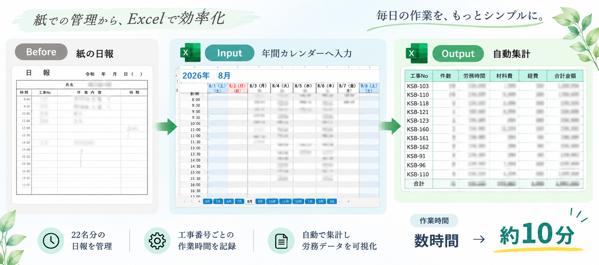

労務日報・集計業務の自動化

紙で管理していた作業日報をExcel化。 工事番号ごとの作業時間を記録し、 22名分の労務データを自動集計する仕組みを構築しました。
22名分の集計作業
数時間 → 約10分
詳しく見る →


事務業務の経験を活かし、 ITを使った業務改善に取り組んでいます。
「もっと簡単にできないか？」 「この作業、自動化できないか？」 という視点を大切にしています。
業務効率化・データ管理
定型業務の自動化
業務改善アプリ開発
Webサイト制作
プログラミング・自動化
Webアプリケーション開発
業務の中にある「ちょっと面倒」を見つけ、 ITを活用して改善した制作事例をご紹介します。

紙で管理していた作業日報をExcel化。 工事番号ごとの作業時間を記録し、 22名分の労務データを自動集計する仕組みを構築しました。

会議音声をアップロードし、 音声データから文字起こし・議事録作成までを 行うWebアプリを制作しています。
詳しく見る →Power AppsやPower Automateを活用し、 日々の事務作業や社内業務の効率化に取り組んでいます。
詳しく見る →お仕事のご相談・お問い合わせは、 クラウドワークスのプロフィール よりお願いいたします。